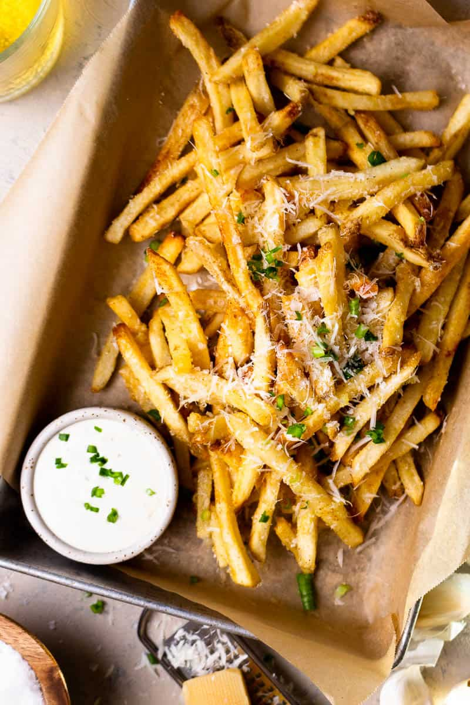

Parmesan Fries

Savoury parmesan fries with garlic and parsley
Ingredients
- 500g - Frozen french fries
- 150g - Parmesan cheese or your choice of hard cheese (Grana Padano, Pecorino Romano, etc)
- Half a cloth - Garlic (lots of it)
- One root - Parsley
Steps
- Put the frozen fries into the hot oil (around 270 degrees Celcius)
- Start peeling the garlic and use a garlic press to make it into a pasta
- Start grating your choice of cheese (always use cheese blocks, not pregrated cheese)
- Cut your parsley
- Prepare some fresh pepper
- Take out your fries and put them onto some paper towels to draw the excess oil
- Put your fries into the plate. Season with salt and fresh cracked pepper. Put around 30% of your parmesan cheese first, followed by all of your garlic, rest of your parmesan and finish with the parsley